Kitchen Renovation
Castle Ridge
Custom cabinetry, quartz waterfall island, commercial-grade appliances, part of a whole-house remodel.
Austin, TX
Kitchen renovations, bathroom remodels, outdoor living, and home additions across Austin, Round Rock, Cedar Park, and Georgetown TX.
Kitchen Renovation · Austin, TX
A full kitchen gut and rebuild with custom cabinetry, quartz waterfall island, and commercial-grade appliances, part of a whole-house remodel that also touched the entry, mudroom, primary bath, and backyard pool.
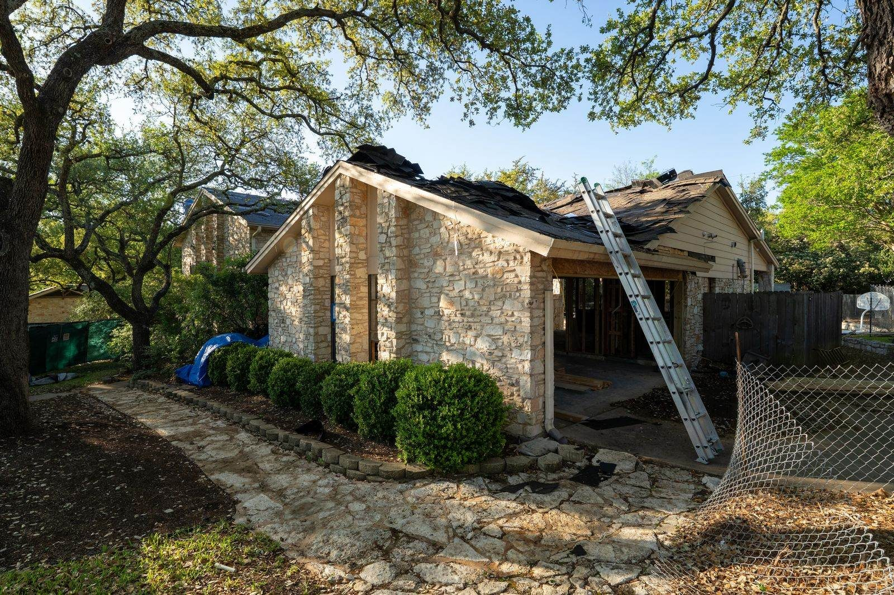
Home Addition · In Progress · Cedar Park, TX
This home addition is currently underway, framing is up and the new space is taking shape. We'll share the finished result once construction wraps.

Kitchen Renovation · Round Rock, TX
A full kitchen renovation with two-tone cabinetry, a custom wood slat range hood, and new stainless appliances throughout. Open sightlines keep the space connected to the rest of the home.

ADU Addition · Crestview, Austin, TX
A standalone ADU with a striking black pitched-roof exterior, plus a refreshed interior with a custom wood vanity and a spa-style walk-in shower.
Kitchen Renovation
Custom cabinetry, quartz waterfall island, commercial-grade appliances, part of a whole-house remodel.
Austin, TX
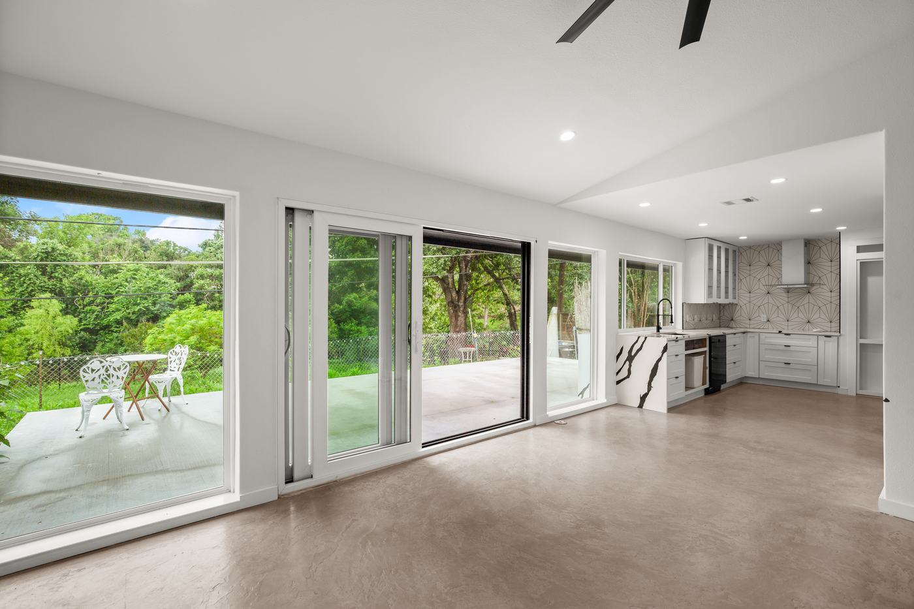
Kitchen Renovation
Marble waterfall island, geometric tile backsplash, and an open sightline straight through to the patio.
University Hills, Austin, TX
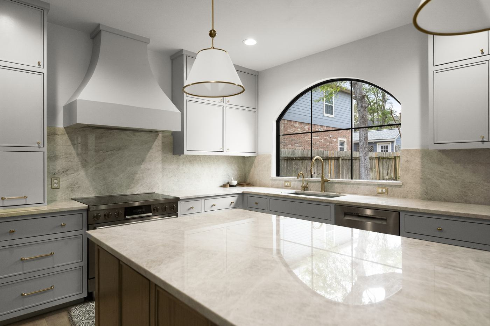
Kitchen Renovation
Marble range hood, brass fixtures, and an arched window over the sink as the room's centerpiece.
Spicewood Springs, TX
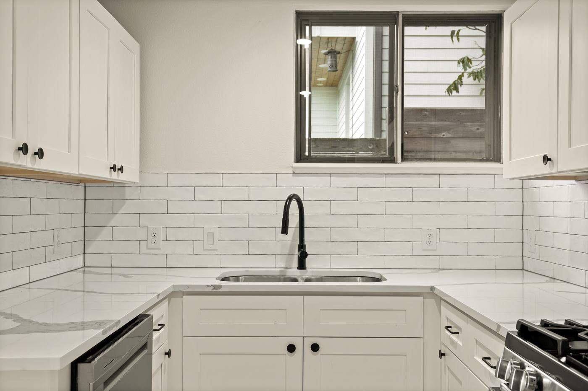
Kitchen Renovation
Subway tile backsplash, quartz counters, and all-new cabinetry throughout.
Rosewood, Austin, TX
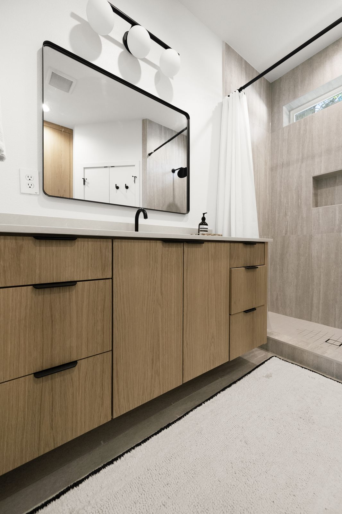
Bathroom Renovation
Custom wood vanity, black-framed mirror, spa-style walk-in shower with full tile surround.
Georgetown, TX
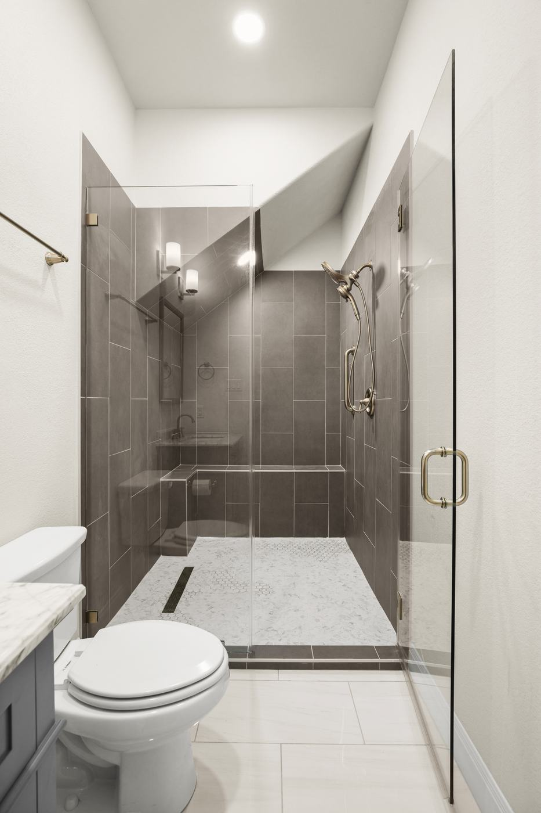
Bathroom Renovation
Frameless glass shower, dark tile surround, and a marble-topped vanity.
Pflugerville, TX
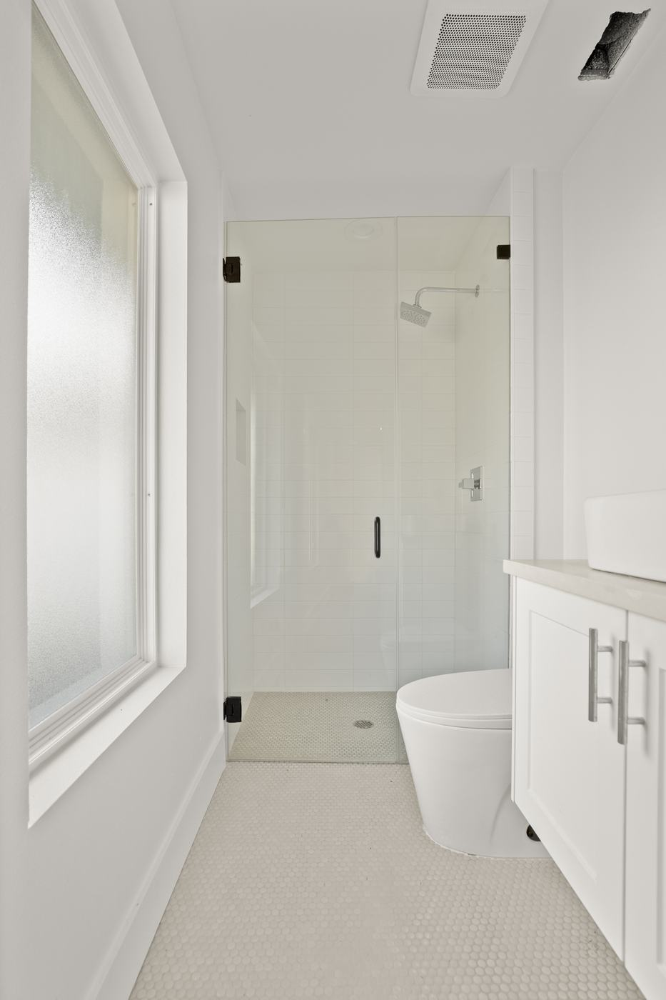
Bathroom Renovation
All-white palette with a glass-enclosed shower and penny tile flooring.
North Shoal Creek, Austin, TX
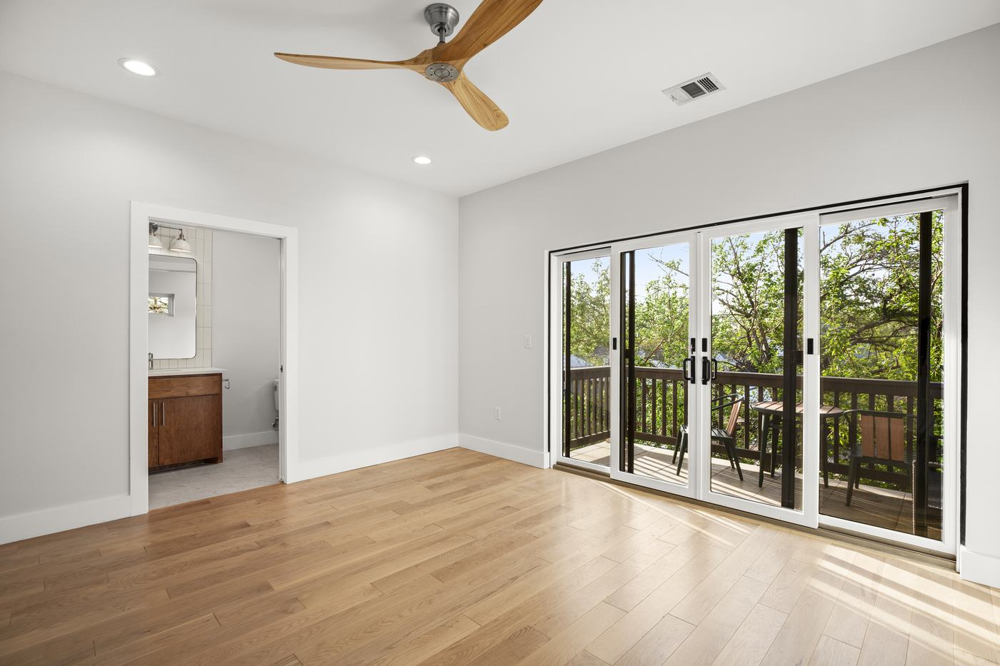
Bathroom Renovation
Primary suite with a private ensuite bath just off the bedroom.
East MLK, Austin, TX
Kitchen Renovation
Two-tone cabinetry, custom wood slat range hood, new stainless appliances throughout.
Round Rock, TX
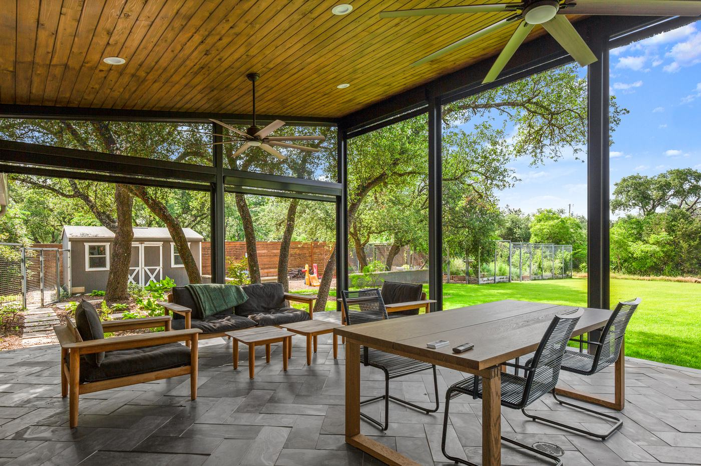
Outdoor Living
Screened patio extension with a wood ceiling and open views to the backyard.
Cedar Park, TX
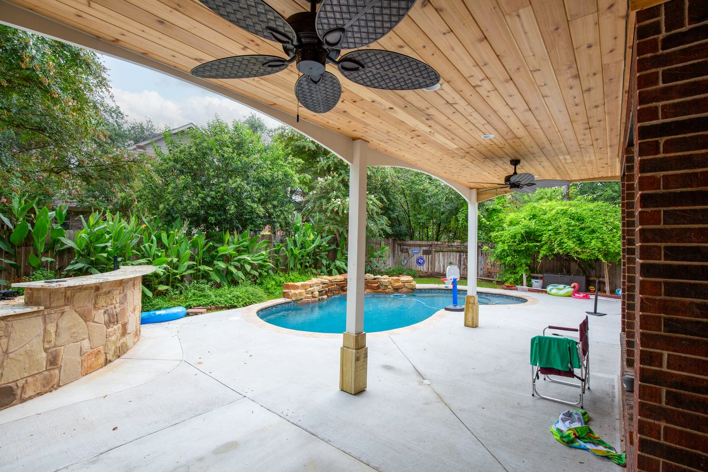
Pool & Outdoor Kitchen
Backyard pool with a covered patio and stone-clad outdoor kitchen bar.
Avery Ranch, Austin, TX
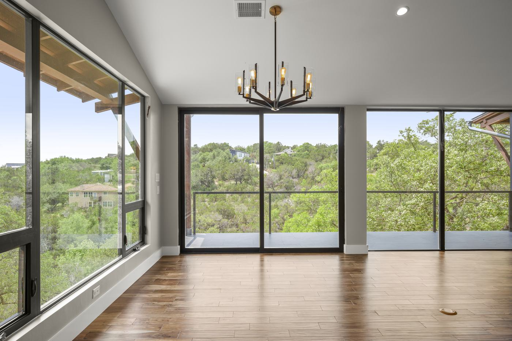
Outdoor Living
Wall-to-wall glass doors opening onto a deck with Hill Country views.
Apache Shores, TX
Home Addition · In Progress
Currently under construction, framing is up and the new space is taking shape.
Cedar Park, TX
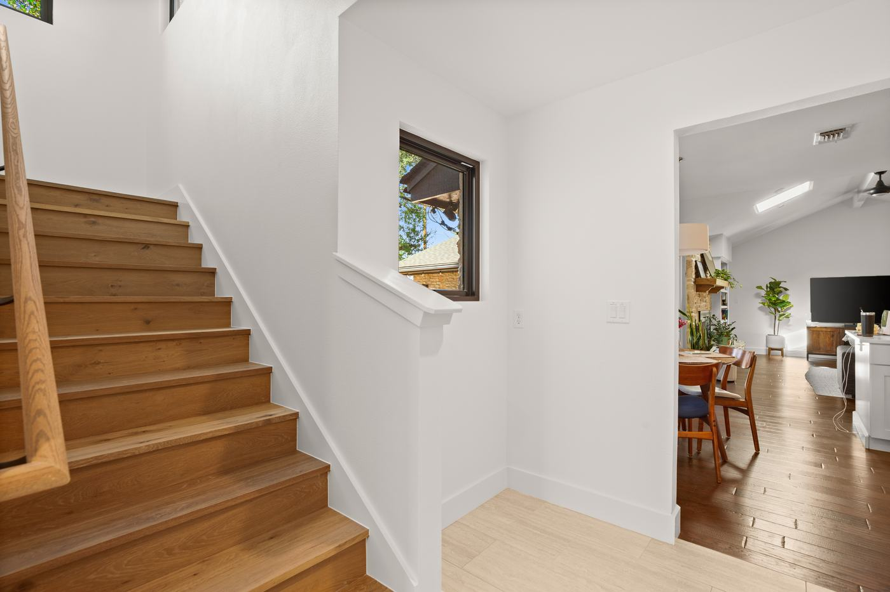
Home Addition & Remodel
New staircase and second-floor addition tied cleanly into the existing home.
Balcones, Austin, TX
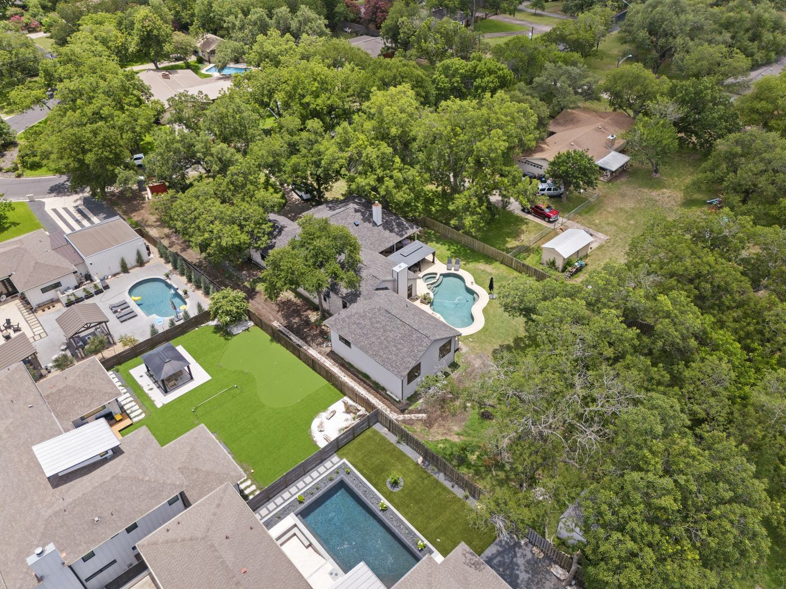
Home Addition
Full home addition with a new pool and covered outdoor kitchen area.
Balcones Woods, Austin, TX
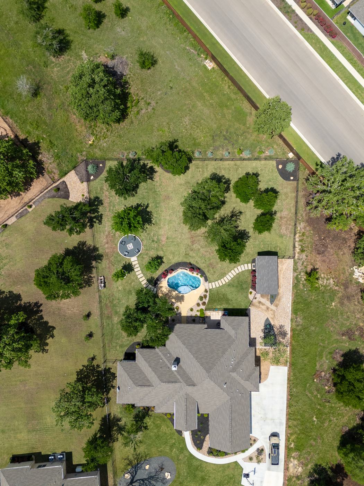
Home Addition & Casita
New addition plus a detached casita, connected by a paved garden path.
Georgetown, TX

New Build
A ground-up custom new build with a clean stone-and-siding exterior, finished top to bottom.
Montopolis, Austin, TX
Tell us about your residential project. We'll tell you what's possible and what it actually takes.
Start a Residential Project